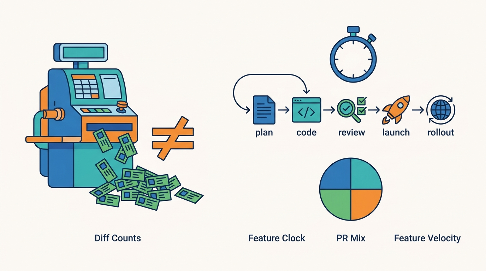

Part IV — PRACTICE: Measuring and Leading
From Diff Velocity to Feature Velocity: Measuring Productivity When PRs Are Cheap

Image generated by Google Gemini (gemini-3-pro-image-preview)
Part IV — PRACTICE: Measuring and Leading

Image generated by Google Gemini (gemini-3-pro-image-preview)